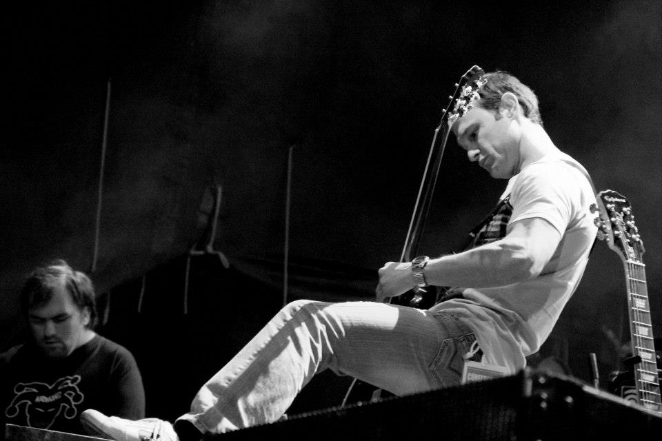

La Renga finalmente concretó su esperado regreso a los escenarios en Santa María de Punilla, Córdoba. Fue el sábado 26 de Febrero ante más de 60.000 personas que viajaron desde distintos puntos de la Argentina. Este show dio inicio a la gira de presentación de su nuevo disco “Alejado de la red". Las entradas estaban totalmente agotadas desde la semana anterior.
No nos bajan más del escenario, vamos a tocar sin parar, lanzó Gustavo “Chizzo” Napoli visiblemente emocionado. Con una puesta imponente que exhibe un escenario de 82 metros de frente, La Renga tocó un total de 29 temas, abriendo con “Buena Pipa” de su flamante material y se despidió con su clásico cierre: “Hablando de la Libertad”. Tocaron 7 temas del reciente álbum y la lista se completó con clásicos como “A la carga mi rocanrol”, “El final es donde partí”, y “El viento que todo empuja” entre otros. Sobre el final de la noche, el grupo dedicó un homenaje a Norberto Napolitano con su tema “Viva Pappo” al cumplirse un nuevo aniversario de su muerte (25 de febrero).
Luego que una pandemia frenara la llegada de Guns N’ Roses a Sudamérica en 2020, por fin tenemos buenas noticias para todos los fans que esperaban el regreso de la banda de hard rock a este lado del mundo. Además, vendrán acompañados de la banda mexicana Molotov.
Axl Rose, Slash y Duff McKagan vuelven con un nuevo nombre para su tour, “We're F'N Back!” Antes de que postergaran su gira, el nombre que recibía era "Not in This Lifetime Tour".
Mirá todas las fechas acá.
Foo Fighters comunicó en la noche del viernes 25 de marzo el fallecimiento de su baterista, Taylor Hawkins. Tenía 50 años y se encontraba en Bogotá, Colombia, donde la banda iba a presentarse en el festival Estéreo Picnic. No se ha dado a conocer la causa del deceso.
“La familia de Foo Fighters se encuentra devastada por la trágica e inesperada pérdida de nuestro amado Taylor Hawkins. Su espíritu musical y risa contagiosa vivirán con nosotros por siempre", empieza el comunicado de Foo Fighters. “Enviamos nuestras condolencias a su esposa, hijos y familiares, y pedimos que su privacidad sea tratada con el mayor de los respetos en este tiempo inimaginablemente difícil”.
La banda liderada por Dave Grohl se encontraba realizando una gira por Latinoamérica para presentar su disco del año pasado, Medicine at Midnight. La última presentación ocurrió el pasado fin de semana en el Lollapalooza Argentina.
Están de vuelta. Los australianos más queridos del hard rock han regresado para alborotar a todo el público rockero, AC/DC acaba de estrenar una nueva canción titulada “Shot In The Dark”. Este tema es un adelanto de ‘PWR/UP‘, álbum que verá la luz el 13 de noviembre de este año y que sin duda promete hacerte agitar la cabeza desde la comodidad de tu hogar.
Después de toda la expectativa que ha generado la banda por el reencuentro con antiguos integrantes, por fin llegó el día en que podremos escucharlos juntos nuevamente y sentir la energía que transmite AC/DC.
Viví el nuevo video acá.


Estadio River Plate
30-04-2022
Aero Club San Francisco
07-05-2022
Estadio Mario Alberto Kempes
14-05-2022